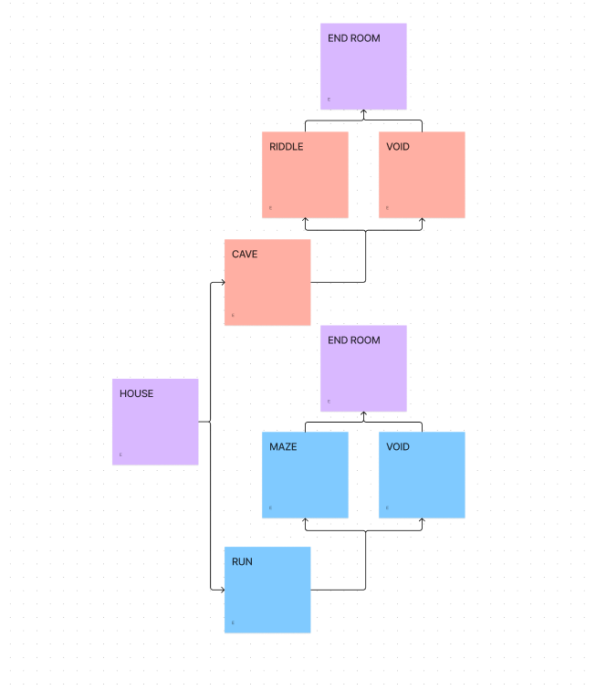
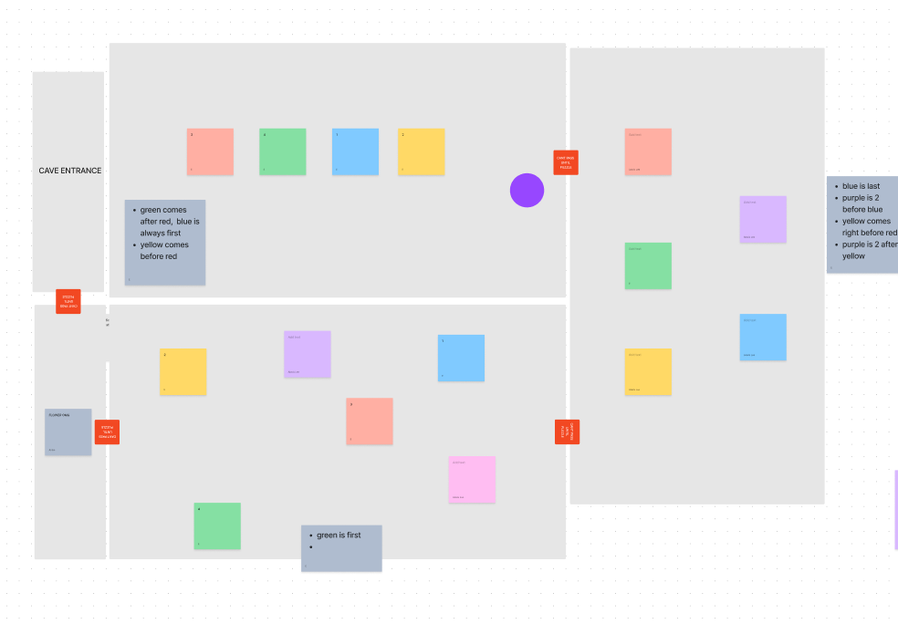
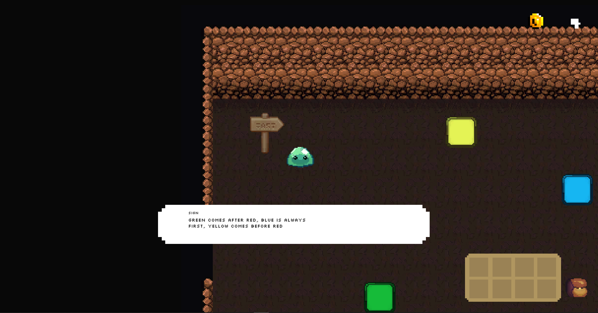
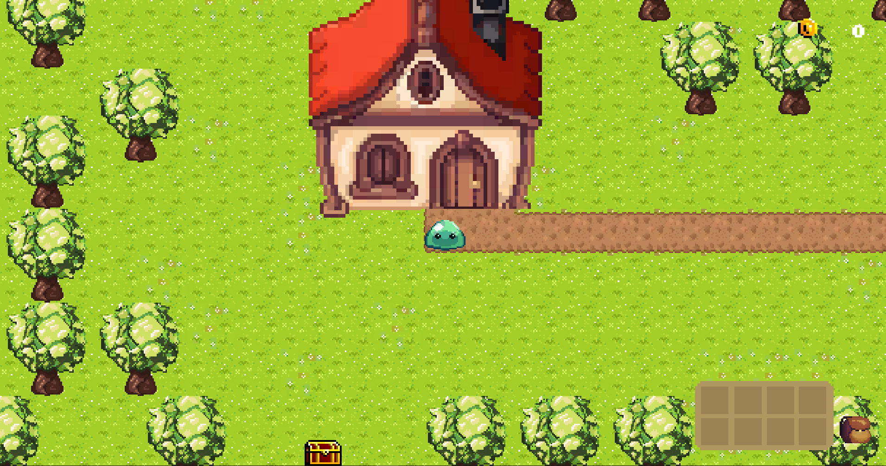

Team-Based Academic Project
Role:
Tools:
Link:
Game Designer and Programmer
Unity - C# and Figma
Date:
Fall 2022
https://aclee5.github.io/ArgonChaliceRedesign/This 2D game was created within a university course on the Foundations of Game Design. The objective was to create a narrative based digital game that would display key elements of game design such as narrative structures, rewards systems and level design. This project spanned a period of four weeks, created within a team of four including myself. The main roles of each team member were as follows: Erin – level designer, Alexis – programmer, Alyssa – visual artist. This project helped to develop foundations and the design process of game design as a team.
Our initial ideation began within Figma's extension FigJam where we began brainstorming various potential narratives that could work for our game. This allowed us to generate many different possibilities that we were then able to narrow down and select one from to move forward with. From here we were able to plot out the narrative structure, dialogue and pathing of the game as seen in Figure 1.

Figure 1: Screenshot of initial narrative brainstorming
From this planning my team and I were able to create an initial prototype of the game, which we conducted several playtests on. This allowed us to see pain points among the design and potential areas that would need re-working, which lead us back to brainstorming as the current pathing in this early version was not working as intended. Figure 2 shows the result of our brainstorm where we mapped out a new pathing for the game world.
Figure 2: Brainstorming pathing of game levels/rooms
Figure 3: Planning layout of cave level room
Our next step involved the planning and design of the various levels and minigames we wanted within the game. Figure 3 shows the first mockup of a layout for one of the levels I worked on. This allowed me to plan out how the player would move and progress through this level and potential placements of items. Within this level a player would have to stand on coloured tiles in the correct order given to them through a puzzle. Although this layout shows three rooms to this level, in the final version there is two rooms instead.
Figure 4: Screenshot of a cave level in SlimeQuest
Figure 4 demonstrates how this room appeared within the final version of our video game. In the creation of this level I first used simple coloured squares within unity as placeholders for the tiles seen in figure 4 in order to first focus on coding the specific logic and flow of this room. After this logic was completed we could adjust the assets into the finalized visual assets we created.
One of the most challenging pieces I worked on throughout this project was the logic within the cave level that is shown within figure 4. Figure 6 shows a screenshot of some of the code I used within the logic of this level. I found this particularly challenging to find an relatively efficient method to identify and compare teh tiles the player stepped on to the correct order of tiles needed. What was really beneficial was stepping back and discussing amongst other team members on my process of logic for this level. This helped me reflect and consider new ways of approaching the problem. In the end through this and much research, I found creating two arrays and iterating through them as a solution to this problem. On reflection I believe it would be nice to find a more efficient solution even though this one worked, as there was some repetitive code. Overall throughout this project I was able to really develop develops strong skills within the software unity using the programming language C#, and the fundamentals of game design, and game narrative.
Figure 5: Screenshot of riddle level in SlimeQuest
Some of the other specific sections I worked on within the game include several of the other levels programmed logic such as the riddle level (shown in figure 5), the maze level, inventory logic and ingredients pickup, sound effects and finally some narrative/dialogue.

Figure 6: Screenshot of riddle level in SlimeQuest